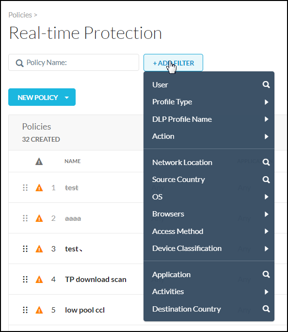
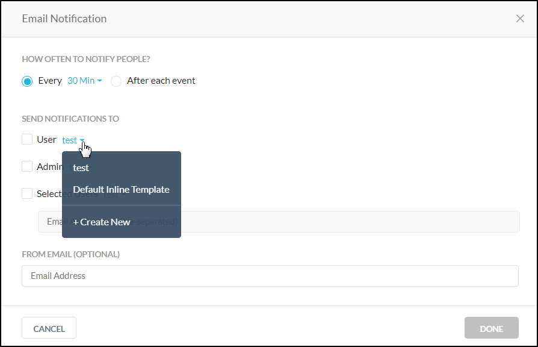
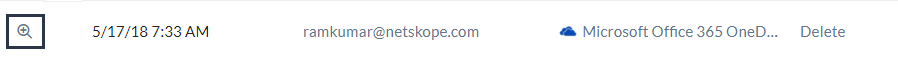

Real-time Protection Policies
The policy framework allows admins to match against CCL and custom tags, supports multiple DLP profiles, supports an action per DLP profile, and set Traffic Action when a profile does not match.
To watch a video about the new Real-time Protection policy workflow, click play.
To get started, go to: Policies > Real-time Protection.
This pages shows:
Name of each policy.
The source (traffic criteria) for the policy.
The apps each policy monitors.
The profile applied to each policy.
The current action applied to each policy.
For a more detailed view of each policy, click the name of the policy.
Policy details provide information about:
Traffic Criteria: Traffic Criteria are sorted into 'Source' and 'Destination.' Netskope will show the most appropriate criteria based on your policy template selection.
Profile and Action: The action is performed when the traffic criteria and profile are both matched.
Additional menu options for editing a policy
You can edit the policy by clicking the three dots to the far right of the policy name. A menu opens that enables you to edit, view alerts, move policies, revert, disable, clone, and delete policies.
 |
Searching for a policy
You can search for a specific policy by typing the name in the search box. The policies that match closely to your search text are filtered in the Policies list. Optionally, you can select the Show Matched Policies Only checkbox which further filters your policy list to display only the policies that precisely match your search text.
The Real-time Protection Policies page also allows you to use search filters to find policies for specific users, apps, and websites.
|  |
To use the search filters, click the filter icon to apply one or more of these filters:
User Name: Find policies that detect specific users.
Profile Type: Find policies with DLP, Threat Protection, IPS, or no associated profile.
DLP Profile Name: Find policies that use certain DLP rules, like PCI, PII, PHI or any DLP profile.
Action: Find policies that take a certain action, like block or encrypt.
Network Location: Look up and filter by a specific or multiple network location(s).
Source Country: Look up and filter by a specific or multiple source country(ies).
OS: Find policies that detect specific operating systems.
Browsers: Find policies that detect specific browsers.
Access Method: Find policies that detect specific types of access, like explicit or reverse proxy, GRE, or IPSec.
Device Classification: Find policies that detect managed or unmanaged devices.
Application: Look up and filter by a specific application.
Activities: Find policies that track specific activities like downloads and uploads.
Destination Country: Look up and filter by one or more destination country(ies).
User Group: Find policies that detect specific user groups.
Application: Find policies that detect a specific cloud application.
Category: Find policies that detect specific cloud application and website categories.
The Real-time Protection Policies list page by default displays 150 rows. To change your view, select the option from the bottom right of the page (options include: 25, 50, 100, 150).
You can view the list page in compact table view (default) or detail table view. From the detail table view, you can customize the columns or restore the default view. To access the Customize Columns window, click the gear in the upper right corner of the table.
 |
Create a Real-time Protection Policy
Policies are defined using a set of variables. These variables define the criteria for detecting policy violations.
For descriptions for each of the variables used, refer to Real-time Protection Policy Variables.
To create a Real-time Protection policy:
Note
When you see a text box during the policy workflow, click in the text box to view your additional options or to edit your selection(s). These options dynamically display based on your initial template choice. Many criteria are set to ‘Any’ by default. This means the policy engine will not match against the criteria.
When available, click Add Criteria to see what other match criteria are supported. Add more criteria to your policy to make it more specific.
Optionally, click the 'X' to the far right of the text box to remove a criteria.
On the Real-time Protection Policies page, click New Policy. When creating a new policy, select a template that most resembles your goal. You can choose a DLP or Threat Protection, or an access control type policy template: Cloud App Access, Web Access, or Private App Access. No matter the choice, you can edit as you work through the policy creation workflow. Choosing a template means some fields are auto-populated for efficiency.

Select the Source. Click in the text box to select users, user groups, or organizational units. Traffic Criteria is sorted as 'Source' and 'Destination.' The system will show the most appropriate criteria based on your policy template selection. Many criteria are set to 'Any' by default. This means the policy engine will not match against the criteria.
Optionally, click Add Criteria to see what other match criteria are supported. Add more criteria to your policy to make it more specific.

For Destination, click in the text box to switch among App (Public or Private), Category, and Instance. These options allow you to write a specific policy against a few applications or instances, or a generic policy against entire categories of applications and websites.

Optionally, select Activities and Constraints. After selecting an app, you can further narrow your policy by selecting specific activities and constraints.
Note
As part of file activity, a user can add a comment to a file in Microsoft Office 365 OneDrive. In OneDrive account, hover over a file and click See details > Activity. In Netskope, this activity translates to a post. Microsoft allows commenting for non-Microsoft Office file types only like .zip, .pdf, .txt, .png, .pem, and more. Netskope reports post activity for such file types. However, Microsoft does not allow commenting for .docx, xlsx, and .pptx file types. Due to this limitation from Microsoft, Netskope does not report post activity for such file types.

You can add more Destination criteria. The system will show the most appropriate criteria based on Application, Category, App Instance, or Private App selection.

Select a Profile and Action. Click in the text box to view your other options. To perform additional content inspection on the traffic, add a profile. The action you specify in this step is performed when the traffic criteria and profile are both matched.

Select the action you would like to take, like Alert, Block, Quarantine, Forward to Proxy, and so on. Some actions allow you to choose a default template for the notification sent to the user when the policy detects a violation.

Optionally, you may see the 'Set action for each profile' checkbox. This option is visible based on your initial template selection. This is an optional feature to help you consolidate policies. If you have multiple DLP profiles in one policy, you can set an action for each profile.

Optionally, you may see the 'Add Traffic Action' button. This action allows you to consolidate a DLP policy and an access control (Cloud App Access, Web Access, or Private App Access) policy that have the same traffic criteria. When the traffic criteria matches but the DLP profile does not, the traffic action will be taken.

Optionally, you can edit or remove your Profile & Action. Click the pencil icon or the three dots to the far right of the profile name.

Enter a name and a description.
Important
When creating policy names, only use alphanumeric characters and symbols such as "_" underscore, "-" dash, and "[ or ]" square brackets. You cannot use the greater than ">" and less than "<" symbols in policy names.
Select an Email Notification. Select the notification frequency. Choose None if you don't want an email notification about the policy violation and the resulting action. When you choose 'Every,' you can select the frequency of the email notifications from the dropdown list – 30 Mins, 60 Mins, 6 Hours, 24 Hours. Or, choose to notify 'After each event.'
Select the User, Admin, or Users to be notified. You can use the default email template or create a new template. Optionally, you can specify the an email address that will appear as the sender in the email notification. Wen finished, click Done to save your email notification setting and exit the window.
 Optionally, you can enable a time based policy schedule. See the Time Based Policies topic for details. If you do not see this option, contact Support to enable it in your account.

If a policy schedule is configured, you will see a clock
 icon beside the policy name in the Policy list page.
icon beside the policy name in the Policy list page.If a time range has expired, you will see a grayed out
 clock icon and policy name. The policy is still enabled but it requires your attention. In both cases, you can hover over the clock icon for details.
clock icon and policy name. The policy is still enabled but it requires your attention. In both cases, you can hover over the clock icon for details.Click Save in the upper right corner to save your new policy. You should see it in the Policy list page.
Real-time Protection Policy Variables
The following variables can be defined for an Real-time Protection policy. You can use a variety of variables in a policy. If a variable is not used in the policy, it is defined as Any.
Variable | Description |
|---|---|
Users | Users created manually in the UI or Active directory users that are automatically populated from the enterprise AD server. |
User Groups | These are the Active Directory (AD) groups that are automatically populated to the Netskope cloud from the Enterprise AD server. Specifying user groups in a policy requires installing the Netskope AD adapter on a server that is part of your domain in order to export the AD user group names. |
Organizational Unit | This information is obtained from the exported AD groups. Specifying organizational units in a policy requires installing the Netskope AD adapter on a server that is part of your domain in order to export the AD organizational unit names. |
Cloud Apps + Web | Cloud app variables include:
|
Cloud Confidence Index Level (CCI Level) | A CCI Level can be applied when certain app categories, like Application Suite, are chosen. CCI measures the enterprise readiness of the cloud apps taking into consideration their security, auditability, and business continuity. Each app is assigned a score of 0-100, and based on the score, placed into one of five cloud confidence levels: Excellent, High, Medium, Low, or Poor. CCI can be used as a matching criteria in the policy. For example, you can choose to not let users share content in cloud storage apps rated Medium or below. |
DLP Profile | A data loss prevention (DLP) profile detects violations like PCI (which identifies credit card information). DLP profiles and rules can be configured in Policies > DLP. |
Threat Protection Profile | A threat protection profile detects malware files and malicious sites. Threat protection profiles can be configured in Settings > Threat Protection. |
Activities | The Netskope content analytics engine performs deep packet inspection to detect a specific cloud app and also to extract the relevant information about the activities performed with that app. It can detect if the user downloads a file, uploads a file, shares a file, and also detects the file name, and so on. Today the Netskope engine can detect 4000+ apps and can track 4500+ activities. |
Constraints | What the user is allowed to do for that specific activity (like allowed to share only within the organization). Constraints are shown only for the activities that support each constraint. Constraint profiles are defined in Policies > Profiles > Constraints. Refer to Profiles for details on configuring constraints profiles. |
Additional Attributes | These optional variables detect the following:
|
Action | Action taken when a violation is detected:
|
Create an App Instance
Some cloud apps have multiple instances of an app active at the same time, like an enterprise Google Drive instance for an organization vs. a personal Google Drive instance.
The Netskope analytics engine tracks the instance ID for cloud apps. You can create an app instance label based on the instance ID, and then use the app instance label in a policy to detect specific instances of a SaaS app.
To create an app instance label:
Log in to the Netskope tenant UI.
Navigate to SkopeIT > EVENTS > Application Events or Alerts.
In the Application Events table, identify the application for which you intend to create an app instance. Then click the icon at the beginning of the row entry.
The Application Event Details panel opens on the right side of the page.
Under the APPLICATION section, click the + icon beside the application name.
The Create Application Instance dialog box opens.
In the Name field, enter a label to append to the application name to distinguish between instances. The label must be alphanumeric (A-Z, 0-9).
Click Submit.
The label is what appears in the App Instance dropdown list when creating a Real-time Protection policy.